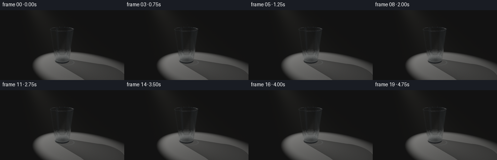
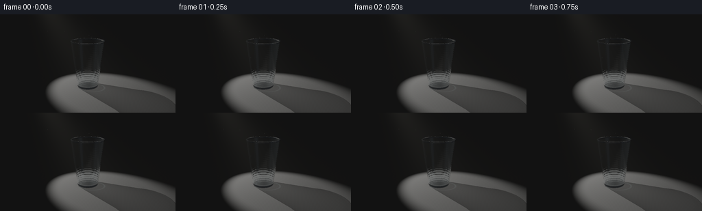

CODING AGENTS AS PIXEL WORLD MODELS
traex/GPT-6.1-Sol · phygen_044
点击播放 · 原生 RGB 像素
逐轮保存的候选
回放视频、检查图与代码变化。
每份候选均可单独播放。实际图片检查记录在下方工具轨迹中。
候选 01播放与检查图
点击播放 · 原生 RGB 像素


展开代码变化
--- 上一保存版本
+++ 本次保存版本
@@ -0,0 +1,231 @@
+"""Procedural RGB film: a clear disposable cup in a diagonal shaft of light.
+All geometry, ray intersections, optics, and atmospheric light are implemented
+locally in numpy; no external renderer or image assets are used.
+"""
+from pathlib import Path
+import json
+import numpy as np
+from PIL import Image
+import artifact_io
+
+ROOT=Path(__file__).resolve().parent
+SPEC=json.loads((ROOT/'task_spec.json').read_text())
+W,H=SPEC['width'],SPEC['height']
+SS=3
+RW,RH=W*SS,H*SS
+DT=np.float32
+
+def unit(a):
+ return a/np.maximum(np.linalg.norm(a,axis=-1,keepdims=True),1e-9)
+
+CAM=np.array([0,3.0,6.8],dtype=DT)
+TARGET=np.array([0,.96,0],dtype=DT)
+forward=unit(TARGET-CAM)
+right=unit(np.cross(forward,np.array([0,1,0],DT)))
+up=unit(np.cross(right,forward))
+y,x=np.mgrid[:RH,:RW].astype(DT)
+focal=264*SS
+D=unit(forward[None,None,:]+right*(x[...,None]+.5-RW/2)/focal-up*(y[...,None]+.5-RH/2)/focal).reshape(-1,3)
+O=np.broadcast_to(CAM,D.shape).copy()
+
+# Surface normals point out of the plastic, not necessarily out of the cup.
+# Radius changes with height, giving the typical tapered disposable-cup form.
+segments=[(.055,1.815,.423,.635,1),(.105,1.815,.402,.613,-1),
+ (1.815,1.846,.635,.655,1),(1.846,1.866,.655,.646,1),
+ (1.815,1.846,.613,.607,-1),(1.846,1.866,.607,.614,-1),
+ (.026,.055,.407,.423,1)]
+disks=[(.026,0,.407,-1),(.105,0,.402,1),(1.866,.614,.646,1)]
+
+def hit_cup(o,d):
+ n=len(o)
+ best=np.full(n,1e8,dtype=DT)
+ normals=np.zeros_like(o)
+ kind=np.zeros(n,dtype=np.int8)
+ for low,high,r0,r1,sign in segments:
+ b=(r1-r0)/(high-low); a=r0-b*low
+ rr=a+b*o[:,1]
+ A=d[:,0]**2+d[:,2]**2-(b*d[:,1])**2
+ B=2*(o[:,0]*d[:,0]+o[:,2]*d[:,2]-rr*b*d[:,1])
+ C=o[:,0]**2+o[:,2]**2-rr**2
+ disc=B*B-4*A*C
+ sq=np.sqrt(np.maximum(disc,0))
+ for t in ((-B-sq)/(2*A+1e-20),(-B+sq)/(2*A+1e-20)):
+ yy=o[:,1]+t*d[:,1]
+ ok=(disc>=0)&(t>.00015)&(t<best)&(yy>=low)&(yy<=high)
+ inds=np.flatnonzero(ok)
+ if len(inds):
+ p=o[inds]+d[inds]*t[inds,None]
+ rn=a+b*p[:,1]
+ norm=unit(np.column_stack((p[:,0],-b*rn,p[:,2])))*sign
+ # Fine molded horizontal grooves, especially at the lower body.
+ if high>1.5 and low<.2:
+ py=p[:,1]
+ strength=.029+.055*np.exp(-((py-.35)/.3)**2)
+ bump=strength*np.cos(py*88)
+ # Very shallow longitudinal fluting catches the spotlight.
+ angle=np.arctan2(p[:,2],p[:,0])
+ flute=.014*np.sin(angle*48)
+ norm[:,0]+=flute*(-np.sin(angle))
+ norm[:,2]+=flute*np.cos(angle)
+ norm[:,1]+=bump
+ norm=unit(norm)
+ best[inds]=t[inds]; normals[inds]=norm; kind[inds]=1
+ for yy,ri,ro,sg in disks:
+ t=(yy-o[:,1])/(d[:,1]+1e-20)
+ p=o+d*t[:,None]
+ r2=p[:,0]**2+p[:,2]**2
+ ok=(t>.00015)&(t<best)&(r2>=ri*ri)&(r2<=ro*ro)
+ best[ok]=t[ok]; normals[ok]=[0,sg,0]; kind[ok]=2
+ return best,normals,kind
+
+
+def floor_radiance(p,L,axis,power):
+ tolight=L-p
+ distance=np.linalg.norm(tolight,axis=1)
+ ld=tolight/distance[:,None]
+ cos=np.sum(-ld*axis,axis=1)
+ # A soft edged pool of illumination, surrounded by a nearly black studio.
+ spot=np.clip((cos-np.cos(.31))/(np.cos(.21)-np.cos(.31)),0,1)
+ spot=spot*spot*(3-2*spot)
+ irradiance=power*spot*np.maximum(ld[:,1],0)/(distance*distance)
+ # Shadow physically projected onto the ground by the actual cup geometry.
+ ts,ns,ks=hit_cup(p+ld*.001,ld)
+ occ=ts<distance
+ transmission=np.ones(len(p),dtype=DT)
+ incidence=np.abs(np.sum(ns*ld,axis=1))
+ transmission[occ]=.34+.18*incidence[occ]
+ contact=1-.72*np.exp(-((p[:,0]/.48)**2+(p[:,2]/.45)**2)*2.8)
+ # Subtle satin surface: texture is not a distracting checkerboard.
+ grain=.97+.017*np.sin(p[:,0]*131+p[:,2]*23)+.009*np.sin(p[:,2]*218-p[:,0]*35)
+ albedo=np.array([.37,.365,.35],DT)
+ color=(.009+irradiance*transmission*contact)[:,None]*albedo*grain[:,None]
+ # Faint, refracted light accumulation just beside the translucent base.
+ rr=np.sqrt((p[:,0]-.18)**2+((p[:,2]-.16)*1.25)**2)
+ caustic=np.exp(-((rr-.49)/.031)**2)*np.exp(-((p[:,2]-.1)/.6)**2)
+ color+=caustic[:,None]*np.array([.025,.031,.031])
+ return color
+
+
+def environment(o,d,L,axis,power,ground=True):
+ # Almost-black studio with a warm luminous off-camera soft source.
+ out=np.broadcast_to(np.array([.0018,.0025,.0039],DT),(len(d),3)).copy()
+ if ground:
+ t=-o[:,1]/(d[:,1]+1e-20)
+ mask=(d[:,1]<-.00001)&(t>0)
+ if mask.any():
+ pp=o[mask]+d[mask]*t[mask,None]
+ out[mask]=floor_radiance(pp,L,axis,power)
+ ll=unit(L-o)
+ align=np.sum(d*ll,axis=1)
+ source=np.exp(-np.maximum(0,1-align)/.0022)
+ out+=source[:,None]*np.array([5.4,5.05,4.3],DT)
+ # Dim tall reflector, responsible for a narrow cool edge on the right.
+ strip=np.exp(-((d[:,0]-.76)/.10)**2-((d[:,1]-.12)/.5)**2)*np.maximum(d[:,2],0)
+ out+=strip[:,None]*np.array([.10,.14,.18])
+ return out
+
+
+def render_surface(L,axis,power):
+ color=np.zeros_like(O)
+ throughput=np.ones_like(O)
+ origins=O.copy(); dirs=D.copy()
+ active=np.arange(len(O))
+ for bounce in range(7):
+ if len(active)==0: break
+ t,n,k=hit_cup(origins,dirs)
+ floor_t=-origins[:,1]/(dirs[:,1]+1e-20)
+ ground=(dirs[:,1]<0)&(floor_t>.00015)&(floor_t<t)
+ escape=(t>1e7)|ground
+ if escape.any():
+ ee=np.flatnonzero(escape)
+ rgb=environment(origins[ee],dirs[ee],L,axis,power)
+ color[active[ee]]+=throughput[active[ee]]*rgb
+ keep=np.flatnonzero(~escape)
+ if not len(keep): break
+ active=active[keep]; origins=origins[keep]; dirs=dirs[keep]
+ t=t[keep]; n=n[keep]; k=k[keep]
+ p=origins+dirs*t[:,None]
+ entering=np.sum(dirs*n,axis=1)<0
+ n=np.where(entering[:,None],n,-n)
+ c=-np.sum(n*dirs,axis=1)
+ eta=np.where(entering,1/1.46,1.46).astype(DT)
+ discriminant=1-eta*eta*(1-c*c)
+ tir=discriminant<0
+ fresnel=.0349+(1-.0349)*np.maximum(0,1-c)**5
+ fresnel[tir]=1
+ refl=unit(dirs+2*c[:,None]*n)
+ reflected=environment(p+n*.0005,refl,L,axis,power)
+ # Glossy finite-source reflection, with a small broad plastic lobe.
+ ld=unit(L-p)
+ alignment=np.maximum(0,np.sum(refl*ld,axis=1))
+ reflected+=np.power(alignment,65)[:,None]*np.array([.30,.285,.25])
+ color[active]+=throughput[active]*fresnel[:,None]*reflected
+ # Tiny diffuse scattering provides recognizable material, not opaque glass.
+ lighting=np.maximum(0,np.sum(n*ld,axis=1))
+ color[active]+=throughput[active]*(.009*lighting)[:,None]*np.array([.75,.87,.92])
+ throughput[active]*=(1-fresnel[:,None])*np.array([.974,.987,.993],DT)
+ refr=unit(eta[:,None]*dirs+(eta*c-np.sqrt(np.maximum(discriminant,0)))[:,None]*n)
+ dirs=np.where(tir[:,None],refl,refr)
+ origins=p+dirs*.0005
+ if bounce==6:
+ color[active]+=throughput[active]*environment(origins,dirs,L,axis,power)
+ return color
+
+
+def atmosphere(L,axis,power):
+ # Integrate weak mist inside the spotlight cone, up to the opaque floor.
+ ft=-CAM[1]/(D[:,1]+1e-20)
+ end=np.where((D[:,1]<0)&(ft>0),np.minimum(ft,14),14).astype(DT)
+ accum=np.zeros(len(D),DT)
+ steps=56
+ for j in range(steps):
+ t=end*((j+.5)/steps)
+ pp=CAM+D*t[:,None]
+ v=pp-L
+ along=np.sum(v*axis,axis=1)
+ radial2=np.maximum(0,np.sum(v*v,axis=1)-along*along)
+ width=np.maximum(.04,along*np.tan(.245))
+ strength=np.exp(-2.3*radial2/(width*width))
+ strength*=((along>0)&(along<8)&(pp[:,1]>0))
+ accum+=strength/(.7+along*along)*end/steps
+ return accum[:,None]*np.array([.062,.059,.049],DT)*power/24
+
+
+def main():
+ frames=[]
+ rng=np.random.default_rng(27)
+ dust=rng.uniform([-2.8,.2,-1.3],[.8,4.4,1.0],size=(34,3)).astype(DT)
+ for i in range(SPEC['frames']):
+ time=i/SPEC['fps']
+ # Locked-off camera. A barely perceptible lamp drift makes the shaft,
+ # reflections and projected shadow move together consistently.
+ L=np.array([-3.1+.055*np.sin(time*.7),5.0,-2.4+.035*np.sin(time*.5)],DT)
+ axis=unit(np.array([0,.62,0],DT)-L)
+ power=25.0*(1+.008*np.sin(time*1.7))
+ linear=render_surface(L,axis,power).reshape(RH,RW,3)
+ linear+=atmosphere(L,axis,power).reshape(RH,RW,3)
+ # Sparse, almost imperceptible floating particles in the light shaft.
+ pp=dust.copy(); pp[:,0]+=.019*time; pp[:,1]+=.018*np.sin(time+pp[:,2])
+ v=pp-CAM; dep=v@forward
+ px=RW/2+focal*(v@right)/dep; py=RH/2-focal*(v@up)/dep
+ vl=pp-L; along=vl@axis
+ radius=np.sqrt(np.maximum(0,(vl*vl).sum(1)-along*along))
+ for j in range(len(pp)):
+ if dep[j]<0 or radius[j]>along[j]*.24: continue
+ xx=int(px[j]); yy=int(py[j])
+ if 2<=xx<RW-2 and 2<=yy<RH-2:
+ yygrid,xxgrid=np.mgrid[-2:3,-2:3]
+ glow=np.exp(-(xxgrid**2+yygrid**2)/1.1)*.016
+ linear[yy-2:yy+3,xx-2:xx+3]+=glow[...,None]*np.array([1,.94,.80])
+ # Gentle photographic tone mapping, retaining the dark surround.
+ linear=np.maximum(linear,0)
+ rgb=np.clip((linear/(1+linear))**(1/2.2)*255,0,255).astype(np.uint8)
+ im=Image.fromarray(rgb).resize((W,H),Image.Resampling.LANCZOS)
+ frames.append(np.asarray(im))
+ print(f'frame {i+1}/{SPEC["frames"]}',flush=True)
+ frames=np.stack(frames).astype(np.uint8)
+ artifact_io.save(frames,ROOT)
+ print('Saved',frames.shape,'RGB frames to',ROOT,flush=True)
+
+if __name__=='__main__':
+ main()
可观测工具轨迹
实际执行的命令与返回图片。
命令 1exit 0
/bin/bash -lc 'ls -la; cat prompt.txt; cat GENERATION_RULES.md; cat task_spec.json'
命令 2exit 0
/bin/bash -lc "cat artifact_io.py; python - <<'PY'
import numpy, PIL
print('numpy and pillow available')
PY"命令 3exit 0
/bin/bash -lc "cat > generate.py <<'PY'
\"\"\"Procedural RGB film: a clear disposable cup in a diagonal shaft of light.
All geometry, ray intersections, optics, and atmospheric light are implemented
locally in numpy; no external renderer or image assets are used.
\"\"\"
from pathlib import Path
import json
import numpy as np
from PIL import Image
import artifact_io
ROOT=Path(__file__).resolve().parent
SPEC=json.loads((ROOT/'task_spec.json').read_text())
W,H=SPEC['width'],SPEC['height']
SS=3
RW,RH=W*SS,H*SS
DT=np.float32
def unit(a):
return a/np.maximum(np.linalg.norm(a,axis=-1,keepdims=True),1e-9)
CAM=np.array([0,3.0,6.8],dtype=DT)
TARGET=np.array([0,.96,0],dtype=DT)
forward=unit(TARGET-CAM)
right=unit(np.cross(forward,np.array([0,1,0],DT)))
up=unit(np.cross(right,forward))
y,x=np.mgrid[:RH,:RW].astype(DT)
focal=264*SS
D=unit(forward[None,None,:]+right*(x[...,None]+.5-RW/2)/focal-up*(y[...,None]+.5-RH/2)/focal).reshape(-1,3)
O=np.broadcast_to(CAM,D.shape).copy()
# Surface normals point out of the plastic, not necessarily out of the cup.
# Radius changes with height, giving the typical tapered disposable-cup form.
segments=[(.055,1.815,.423,.635,1),(.105,1.815,.402,.613,-1),
(1.815,1.846,.635,.655,1),(1.846,1.866,.655,.646,1),
(1.815,1.846,.613,.607,-1),(1.846,1.866,.607,.614,-1),
(.026,.055,.407,.423,1)]
disks=[(.026,0,.407,-1),(.105,0,.402,1),(1.866,.614,.646,1)]
def hit_cup(o,d):
n=len(o)
best=np.full(n,1e8,dtype=DT)
normals=np.zeros_like(o)
kind=np.zeros(n,dtype=np.int8)
for low,high,r0,r1,sign in segments:
b=(r1-r0)/(high-low); a=r0-b*low
rr=a+b*o[:,1]
A=d[:,0]**2+d[:,2]**2-(b*d[:,1])**2
B=2*(o[:,0]*d[:,0]+o[:,2]*d[:,2]-rr*b*d[:,1])
C=o[:,0]**2+o[:,2]**2-rr**2
disc=B*B-4*A*C
sq=np.sqrt(np.maximum(disc,0))
for t in ((-B-sq)/(2*A+1e-20),(-B+sq)/(2*A+1e-20)):
yy=o[:,1]+t*d[:,1]
ok=(disc>=0)&(t>.00015)&(t<best)&(yy>=low)&(yy<=high)
inds=np.flatnonzero(ok)
if len(inds):
p=o[inds]+d[inds]*t[inds,None]
rn=a+b*p[:,1]
norm=unit(np.column_stack((p[:,0],-b*rn,p[:,2])))*sign
# Fine molded horizontal grooves, especially at the lower body.
if high>1.5 and low<.2:
py=p[:,1]
strength=.029+.055*np.exp(-((py-.35)/.3)**2)
bump=strength*np.cos(py*88)
# Very shallow longitudinal fluting catches the spotlight.
angle=np.arctan2(p[:,2],p[:,0])
flute=.014*np.sin(angle*48)
norm[:,0]+=flute*(-np.sin(angle))
norm[:,2]+=flute*np.cos(angle)
norm[:,1]+=bump
norm=unit(norm)
best[inds]=t[inds]; normals[inds]=norm; kind[inds]=1
for yy,ri,ro,sg in disks:
t=(yy-o[:,1])/(d[:,1]+1e-20)
p=o+d*t[:,None]
r2=p[:,0]**2+p[:,2]**2
ok=(t>.00015)&(t<best)&(r2>=ri*ri)&(r2<=ro*ro)
best[ok]=t[ok]; normals[ok]=[0,sg,0]; kind[ok]=2
return best,normals,kind
def floor_radiance(p,L,axis,power):
tolight=L-p
distance=np.linalg.norm(tolight,axis=1)
ld=tolight/distance[:,None]
cos=np.sum(-ld*axis,axis=1)
# A soft edged pool of illumination, surrounded by a nearly black studio.
spot=np.clip((cos-np.cos(.31))/(np.cos(.21)-np.cos(.31)),0,1)
spot=spot*spot*(3-2*spot)
irradiance=power*spot*np.maximum(ld[:,1],0)/(distance*distance)
# Shadow physically projected onto the ground by the actual cup geometry.
ts,ns,ks=hit_cup(p+ld*.001,ld)
occ=ts<distance
transmission=np.ones(len(p),dtype=DT)
incidence=np.abs(np.sum(ns*ld,axis=1))
transmission[occ]=.34+.18*incidence[occ]
contact=1-.72*np.exp(-((p[:,0]/.48)**2+(p[:,2]/.45)**2)*2.8)
# Subtle satin surface: texture is not a distracting checkerboard.
grain=.97+.017*np.sin(p[:,0]*131+p[:,2]*23)+.009*np.sin(p[:,2]*218-p[:,0]*35)
albedo=np.array([.37,.365,.35],DT)
color=(.009+irradiance*transmission*contact)[:,None]*albedo*grain[:,None]
# Faint, refracted light accumulation just beside the translucent base.
rr=np.sqrt((p[:,0]-.18)**2+((p[:,2]-.16)*1.25)**2)
caustic=np.exp(-((rr-.49)/.031)**2)*np.exp(-((p[:,2]-.1)/.6)**2)
color+=caustic[:,None]*np.array([.025,.031,.031])
return color
def environment(o,d,L,axis,power,ground=True):
# Almost-black studio with a warm luminous off-camera soft source.
out=np.broadcast_to(np.array([.0018,.0025,.0039],DT),(len(d),3)).copy()
if ground:
t=-o[:,1]/(d[:,1]+1e-20)
mask=(d[:,1]<-.00001)&(t>0)
if mask.any():
pp=o[mask]+d[mask]*t[mask,None]
out[mask]=floor_radiance(pp,L,axis,power)
ll=unit(L-o)
align=np.sum(d*ll,axis=1)
source=np.exp(-np.maximum(0,1-align)/.0022)
out+=source[:,None]*np.array([5.4,5.05,4.3],DT)
# Dim tall reflector, responsible for a narrow cool edge on the right.
strip=np.exp(-((d[:,0]-.76)/.10)**2-((d[:,1]-.12)/.5)**2)*np.maximum(d[:,2],0)
out+=strip[:,None]*np.array([.10,.14,.18])
return out
def render_surface(L,axis,power):
color=np.zeros_like(O)
throughput=np.ones_like(O)
origins=O.copy(); dirs=D.copy()
active=np.arange(len(O))
for bounce in range(7):
if len(active)==0: break
t,n,k=hit_cup(origins,dirs)
floor_t=-origins[:,1]/(dirs[:,1]+1e-20)
ground=(dirs[:,1]<0)&(floor_t>.00015)&(floor_t<t)
escape=(t>1e7)|ground
if escape.any():
ee=np.flatnonzero(escape)
rgb=environment(origins[ee],dirs[ee],L,axis,power)
color[active[ee]]+=throughput[active[ee]]*rgb
keep=np.flatnonzero(~escape)
if not len(keep): break
active=active[keep]; origins=origins[keep]; dirs=dirs[keep]
t=t[keep]; n=n[keep]; k=k[keep]
p=origins+dirs*t[:,None]
entering=np.sum(dirs*n,axis=1)<0
n=np.where(entering[:,None],n,-n)
c=-np.sum(n*dirs,axis=1)
eta=np.where(entering,1/1.46,1.46).astype(DT)
discriminant=1-eta*eta*(1-c*c)
tir=discriminant<0
fresnel=.0349+(1-.0349)*np.maximum(0,1-c)**5
fresnel[tir]=1
refl=unit(dirs+2*c[:,None]*n)
reflected=environment(p+n*.0005,refl,L,axis,power)
# Glossy finite-source reflection, with a small broad plastic lobe.
ld=unit(L-p)
alignment=np.maximum(0,np.sum(refl*ld,axis=1))
reflected+=np.power(alignment,65)[:,None]*np.array([.30,.285,.25])
color[active]+=throughput[active]*fresnel[:,None]*reflected
# Tiny diffuse scattering provides recognizable material, not opaque glass.
lighting=np.maximum(0,np.sum(n*ld,axis=1))
color[active]+=throughput[active]*(.009*lighting)[:,None]*np.array([.75,.87,.92])
throughput[active]*=(1-fresnel[:,None])*np.array([.974,.987,.993],DT)
refr=unit(eta[:,None]*dirs+(eta*c-np.sqrt(np.maximum(discriminant,0)))[:,None]*n)
dirs=np.where(tir[:,None],refl,refr)
origins=p+dirs*.0005
if bounce==6:
color[active]+=throughput[active]*environment(origins,dirs,L,axis,power)
return color
def atmosphere(L,axis,power):
# Integrate weak mist inside the spotlight cone, up to the opaque floor.
ft=-CAM[1]/(D[:,1]+1e-20)
end=np.where((D[:,1]<0)&(ft>0),np.minimum(ft,14),14).astype(DT)
accum=np.zeros(len(D),DT)
steps=56
for j in range(steps):
t=end*((j+.5)/steps)
pp=CAM+D*t[:,None]
v=pp-L
along=np.sum(v*axis,axis=1)
radial2=np.maximum(0,np.sum(v*v,axis=1)-along*along)
width=np.maximum(.04,along*np.tan(.245))
strength=np.exp(-2.3*radial2/(width*width))
strength*=((along>0)&(along<8)&(pp[:,1]>0))
accum+=strength/(.7+along*along)*end/steps
return accum[:,None]*np.array([.062,.059,.049],DT)*power/24
def main():
frames=[]
rng=np.random.default_rng(27)
dust=rng.uniform([-2.8,.2,-1.3],[.8,4.4,1.0],size=(34,3)).astype(DT)
for i in range(SPEC['frames']):
time=i/SPEC['fps']
# Locked-off camera. A barely perceptible lamp drift makes the shaft,
# reflections and projected shadow move together consistently.
L=np.array([-3.1+.055*np.sin(time*.7),5.0,-2.4+.035*np.sin(time*.5)],DT)
axis=unit(np.array([0,.62,0],DT)-L)
power=25.0*(1+.008*np.sin(time*1.7))
linear=render_surface(L,axis,power).reshape(RH,RW,3)
linear+=atmosphere(L,axis,power).reshape(RH,RW,3)
# Sparse, almost imperceptible floating particles in the light shaft.
pp=dust.copy(); pp[:,0]+=.019*time; pp[:,1]+=.018*np.sin(time+pp[:,2])
v=pp-CAM; dep=v@forward
px=RW/2+focal*(v@right)/dep; py=RH/2-focal*(v@up)/dep
vl=pp-L; along=vl@axis
radius=np.sqrt(np.maximum(0,(vl*vl).sum(1)-along*along))
for j in range(len(pp)):
if dep[j]<0 or radius[j]>along[j]*.24: continue
xx=int(px[j]); yy=int(py[j])
if 2<=xx<RW-2 and 2<=yy<RH-2:
yygrid,xxgrid=np.mgrid[-2:3,-2:3]
glow=np.exp(-(xxgrid**2+yygrid**2)/1.1)*.016
linear[yy-2:yy+3,xx-2:xx+3]+=glow[...,None]*np.array([1,.94,.80])
# Gentle photographic tone mapping, retaining the dark surround.
linear=np.maximum(linear,0)
rgb=np.clip((linear/(1+linear))**(1/2.2)*255,0,255).astype(np.uint8)
im=Image.fromarray(rgb).resize((W,H),Image.Resampling.LANCZOS)
frames.append(np.asarray(im))
print(f'frame {i+1}/{SPEC[\"frames\"]}',flush=True)
frames=np.stack(frames).astype(np.uint8)
artifact_io.save(frames,ROOT)
print('Saved',frames.shape,'RGB frames to',ROOT,flush=True)
if __name__=='__main__':
main()
PY
OPENBLAS_NUM_THREADS=1 python generate.py"命令 4exit 0
/bin/bash -lc "python - <<'PY'
import numpy as np
from PIL import Image
from pathlib import Path
p=np.load('pixels.npz')['pixels']
files=sorted(Path('frames').glob('*.png'))
f=np.stack([np.array(Image.open(x)) for x in files])
assert f.shape == (20,144,256,3) and f.dtype == np.uint8
assert p.shape == (144,256,20)
print('Verified:',f.shape, f.dtype, 'packed:',p.shape)
print('Intensity min/mean/max:',f.min(), round(float(f.mean()),2),f.max())
print('Temporal mean absolute change:',float(np.abs(f[1:].astype(float)-f[:-1]).mean()))
print('Artifacts:', ', '.join(x.name for x in Path('.').iterdir() if x.is_file()))
PY
command -v ffmpeg || true"保存候选 1 份；完成命令 4 次；可验证图片返回 0 张。原始 API 响应与完整日志保留在本地。